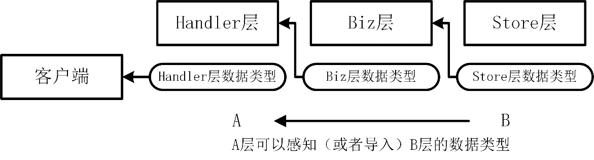

业务实现（3）：实现 Biz 层代码
Biz 层依赖 Store 层，所以实现了 Store 层代码之后，便可以实现 Biz 层代码。Biz 层代码，主要用来实现系统中 REST 资源的各类业务操作，例如用户资源的增删改查等。
整个 miniblog 项目的设计较为规范，规范化的项目设计带来的优点之一是开发方式的一致性和开发效率的提升。miniblog 项目 Biz 层的开发方式与 Store 层的开发方式保持一致。
API 接口定义
在开发 Biz 层代码之前，需要先定义好 API 接口的请求入参和返回参数。为此，新建了 pkg/api/apiserver/v1/user.proto 文件和 pkg/api/apiserver/v1/post.proto 文件，分别保存了用户接口和博客接口的请求入参和返回参数。具体接口定义见 feature/s18 分支 pkg/api/apiserver/v1/ 目录中的对应文件。
因为请求入参和返回参数（例如 CreateUserRequest 和 CreateUserResponse）会提供给接口调用方（客户端），所以需要将接口定义保存在 pkg/api 目录下。另外，考虑到未来 miniblog 可能会加入多个服务，每个服务都有自己的 API 定义，miniblog 项目选择了将每个服务的 API 定义保存在独立的服务目录下，例如 pkg/api/apiserver。
考虑到未来 API 接口的版本升级，miniblog 项目将接口进行了版本化处理，v1 版本的接口保存在 pkg/api/apiserver/v1 目录下，v2 版本的接口保存在 pkg/api/apiserver/v2 目录下。
在 Go 项目开发中，开发者在实现新功能开发时，要时刻考虑到功能未来的扩展能力。否则，未来功能需要升级或扩展时，将面临大量的代码重构，而且重构成本甚至比新开发成本还要高。
在定义完接口之后，还需要执行以下命令，编译 Protobuf 文件：
$ make protoc
IBiz 接口定义及实现
Biz 层代码保存 internal/apiserver/biz/biz.go 文件中，接口名为 IBiz，定义如下：
// IBiz 定义了业务层需要实现的方法.
type IBiz interface {
// 获取用户业务接口.
UserV1() userv1.UserBiz
// 获取帖子业务接口.
PostV1() postv1.PostBiz
// 获取帖子业务接口（V2版本）.
// PostV2() post.PostBiz
}
IBiz 接口包含了 User 资源和 Post 资源 v1 版本的接口，通过抽象工厂设计模式返回对应资源的接口。在 Go 项目开发中，业务层代码的代码量通常最大、变动最频繁，并且随着项目的迭代，可能会出现不兼容的变更。这时需要对外暴露 v2 版本的 API 接口。因此，为了提高代码的可维护性并保留未来的扩展能力，Biz 层代码的存放结构如下：
internal/apiserver/biz/
├── biz.go
├── v1/ # v1 版本代码实现
│ ├── post/ # 提高代码可维护性，不同资源的代码实现分别存放在不同的目录中
│ │ └── post.go
│ └── user/
│ └── user.go
└── v2/ # 保留扩展能力：v2 代码保存目录
上述代码，将不同版本的代码保存在不同的版本化目录中，不同 REST 资源的业务逻辑实现保存在跟资源对应的目录中。不同资源的业务逻辑代码均在其对应的目录中实现，可以在目录级别隔离不同资源的代码实现，有利于提高代码的稳定性，并降低维护的复杂度。
Biz 层依赖于 Store 层的实现，所以在创建 IBiz 实例时，需要传入 IStore 类型的实例，IBiz 实例由 NewBiz 函数创建：
// biz 是 IBiz 的一个具体实现.
type biz struct {
store store.IStore
}
// 确保 biz 实现了 IBiz 接口.
var _ IBiz = (*biz)(nil)
// NewBiz 创建一个 IBiz 类型的实例.
func NewBiz(store store.IStore) *biz {
return &biz{store: store}
}
IBiz 的实现跟 IStore 的实现是保持一致，其他代码，本节不再详解。
UserBiz 接口定义及实现
User 资源的 Biz 层代码实现位于 internal/apiserver/biz/v1/user/user.go 文件中，其接口定义为 UserBiz，代码如下：
// UserBiz 定义处理用户请求所需的方法.
type UserBiz interface {
Create(ctx context.Context, rq *apiv1.CreateUserRequest) (*apiv1.CreateUserResponse, error)
Update(ctx context.Context, rq *apiv1.UpdateUserRequest) (*apiv1.UpdateUserResponse, error)
Delete(ctx context.Context, rq *apiv1.DeleteUserRequest) (*apiv1.DeleteUserResponse, error)
Get(ctx context.Context, rq *apiv1.GetUserRequest) (*apiv1.GetUserResponse, error)
List(ctx context.Context, rq *apiv1.ListUserRequest) (*apiv1.ListUserResponse, error)
UserExpansion
}
// UserExpansion 定义用户操作的扩展方法.
type UserExpansion interface {
Login(ctx context.Context, rq *apiv1.LoginRequest) (*apiv1.LoginResponse, error)
RefreshToken(ctx context.Context, rq *apiv1.RefreshTokenRequest) (*apiv1.RefreshTokenResponse, error)
ChangePassword(ctx context.Context, rq *apiv1.ChangePasswordRequest) (*apiv1.ChangePasswordResponse, error)
ListWithBadPerformance(ctx context.Context, rq *apiv1.ListUserRequest) (*apiv1.ListUserResponse, error)
}
UserBiz 接口中的方法，同样也分为了两大类：标准资源 CURD 接口和扩展接口，扩展接口中实现了用户登录、Token 刷新、密码修改和差性能示例方法。实现 UserBiz 接口的 Go 结构体是 *userBiz。
创建用户：Create 方法实现
userBiz 结构体的 Create 方法实现如下：
// Create 实现 UserBiz 接口中的 Create 方法.
func (b *userBiz) Create(ctx context.Context, rq *apiv1.CreateUserRequest) (*apiv1.CreateUserResponse, error) {
var userM model.UserM
_ = copier.Copy(&userM, rq)
if err := b.store.User().Create(ctx, &userM); err != nil {
return nil, err
}
return &apiv1.CreateUserResponse{UserID: userM.UserID}, nil
}
为了提高开发效率，减少不必要的代码量，Create 方法使用了 github.com/jinzhu/copier 的 Copy 函数给目标结构体变量 userM 赋值。copier 包如何使用，你可以参考 jinzhu/copier 仓库下的 README 文件。在 Go 项目开发中，有时候会为了提高代码的可读性、简洁性和设计的合理性，会选择牺牲一部分性能。在当前的机器配置下及绝大多数业务场景下，这点性能损失完全是可以忽略的。相较于代码可读性和可维护性的提高，这点性能损失是完全值得的。
在 Create 方法中，通过 b.store.User().Create(ctx, &userM) 方法调用，将数据保存在数据库中。
在 Go 项目开发中，数据库禁止保存明文密码。用户密码在入库前需要进行加密处理。为了加密明文密码字符串，miniblog 引入了 github.com/onexstack/miniblog/pkg/auth 包，auth 包中的 Encrypt 函数可以用来加密一个明文密码字符串。因为在入库前都需要对明文密码进行加密，所以，很自然的想到可以通过实现 GORM 框架的 BeforeCreate 钩子来实现。修改 internal/apiserver/model/hook.go 文件，添加以下代码：
import (
...
"github.com/onexstack/miniblog/pkg/auth"
)
// BeforeCreate 在创建数据库记录之前加密明文密码.
func (m *UserM) BeforeCreate(tx *gorm.DB) error {
// Encrypt the user password.
var err error
m.Password, err = auth.Encrypt(m.Password)
if err != nil {
return err
}
return nil
}
用户登录：Login 方法实现
userBiz 结构体的 Login 方法实现如下：
// Login 实现 UserBiz 接口中的 Login 方法.
func (b *userBiz) Login(ctx context.Context, rq *apiv1.LoginRequest) (*apiv1.LoginResponse, error) {
// 获取登录用户的所有信息
whr := where.F("username", rq.GetUsername())
_, err := b.store.User().Get(ctx, whr)
if err != nil {
return nil, errno.ErrUserNotFound
}
// 对比传入的明文密码和数据库中已加密过的密码是否匹配
if err := auth.Compare(userM.Password, rq.GetPassword()); err != nil {
return nil, errno.ErrPasswordInvalid
}
// TODO：实现 Token 签发逻辑
return &apiv1.LoginResponse{Token: "<placeholder>"}, nil
}
一个 Go 项目的认证和鉴权功能设计通常比较复杂。在项目开发初期，建议的开发步骤是先把整个应用框架搭建好，然后再根据需要慢慢补充更多的功能。miniblog 项目开发时，为了先把整个应用框架开发完成，并快速验证和优化，在开发 Biz 层代码时，没有考虑实现鉴权逻辑，并将认证逻辑简化处理。例如，上述代码，登录成功后，返回了一个占位符性的 Token 字符串 <placeholder>。
Login 方法是用户登录逻辑的经典实现。实现逻辑如下：
- 根据用户名从数据库查询用户信息；
- 调用 auth.Compare 方法对比密码是否一致。对比密码时，会将传入的明文密码用相同的加密算法加密，然后将加密后的字符串与数据库中保存的加密字符串进行比，如果相同则登录成功，否则登录失败。
修改用户密码：ChangePassword 方法实现
userBiz 结构体的 ChangePassword 方法实现如下：
// ChangePassword 实现 UserBiz 接口中的 ChangePassword 方法.
func (b *userBiz) ChangePassword(ctx context.Context, rq *apiv1.ChangePasswordRequest) (*apiv1.ChangePasswordResponse, error) {
userM, err := b.store.User().Get(ctx, where.T(ctx))
if err != nil {
return nil, err
}
if err := auth.Compare(userM.Password, rq.GetOldPassword()); err != nil {
return nil, errno.ErrPasswordInvalid
}
userM.Password, _ = auth.Encrypt(rq.GetNewPassword())
if err := b.store.User().Update(ctx, userM); err != nil {
return nil, err
}
return &apiv1.ChangePasswordResponse{}, nil
}
UserM 结构体实现了 BeforeCreate 钩子，在创建用户记录前，会将明文密码加密后保存。更新用户信息时，不会调用 BeforeCreate 钩子。所以需要在 ChangePassword 方法中，将明文密码进行加密。
更新用户：Update 方法实现
userBiz 结构体的 Update 方法实现如下：
// Update 实现 UserBiz 接口中的 Update 方法.
func (b *userBiz) Update(ctx context.Context, rq *apiv1.UpdateUserRequest) (*apiv1.UpdateUserResponse, error) {
userM, err := b.store.User().Get(ctx, where.T(ctx))
if err != nil {
return nil, err
}
if rq.Username != nil {
userM.Username = rq.GetUsername()
}
if rq.Email != nil {
userM.Email = rq.GetEmail()
}
if rq.Nickname != nil {
userM.Nickname = rq.GetNickname()
}
if rq.Phone != nil {
userM.Phone = rq.GetPhone()
}
if err := b.store.User().Update(ctx, userM); err != nil {
return nil, err
}
return &apiv1.UpdateUserResponse{}, nil
}
在更新用户时，根据是否传入待更新的字段来判断是否更新该字段。这样的设计方式，可以通过一个更新接口实现字段的选择性更新。
查询用户列表：List 方法实现
userBiz 结构体的 List 方法实现如代码清单 9-5 所示。
// List 实现 UserBiz 接口中的 List 方法.
func (b *userBiz) List(ctx context.Context, rq *apiv1.ListUserRequest) (*apiv1.ListUserResponse, error) {
whr := where.P(int(rq.GetOffset()), int(rq.GetLimit()))
if contextx.Username(ctx) != known.AdminUsername {
whr.T(ctx)
}
count, userList, err := b.store.User().List(ctx, whr)
if err != nil {
return nil, err
}
var m sync.Map
eg, ctx := errgroup.WithContext(ctx)
// 设置最大并发数量为常量 MaxConcurrency
eg.SetLimit(known.MaxErrGroupConcurrency)
// 使用 goroutine 提高接口性能
for _, user := range userList {
eg.Go(func() error {
select {
case <-ctx.Done():
return nil
default:
count, _, err := b.store.Post().List(ctx, where.T(ctx))
if err != nil {
return err
}
converted := conversion.UserModelToUserV1(user)
converted.PostCount = count
m.Store(user.ID, converted)
return nil
}
})
}
if err := eg.Wait(); err != nil {
log.W(ctx).Errorw("Failed to wait all function calls returned", "err", err)
return nil, err
}
users := make([]*apiv1.User, 0, len(userList))
for _, item := range userList {
user, _ := m.Load(item.ID)
users = append(users, user.(*apiv1.User))
}
log.W(ctx).Debugw("Get users from backend storage", "count", len(users))
return &apiv1.ListUserResponse{TotalCount: count, Users: users}, nil
}
List 方法会查询所有的用户列表，并统计用户所属的博客数，这种遍历多个列表，并且针对列表中每个元素都有耗时处理逻辑的代码，可能会导致 List 方法执行时间较久。为了提高 List 方法的性能，List 方法中使用了 errgroup 包，并发查询每个用户的博客数。
在代码清单 9-5 中 eg.SetLimit 方法调用的作用是限制程序中同时运行的 Go 协程数量，以避免过多协程并发任务导致的系统资源过载（如高 CPU 和内存占用或高 I/O 消耗）。通过 eg.Go 启动的 goroutine 会按照 SetLimit 的限制规则执行。当已经有 MaxErrGroupConcurrency 个任务在运行时，新任务会阻塞，直到某个正在运行的任务完成。
因为会并发处理 userList 列表中的每个元素，所以需要一个并发安全的数据类型，保存处理后的数据。Go 标准库提供了 sync.Map 数据类型，该类型是并发安全的，可以直接在 Go 协程中使用 sync.Map 的 Store 方法添加 key-value 对。代码清单 9-5 中，使用 m.Store 保存了 *apiv1.User 类型的数据。
Store 层返回的数据类型为 *model.UserM，需要转换为 Biz 层使用的数据类型 *apiv1.User。*model.UserM 和 *apiv1.User 数据类型之间的相互转换，在 Biz 层经常会发生，为了提高代码的可维护性，将这类转换实现统一保存在 internal/apiserver/pkg/conversion 目录下的 conversion 包中。
Store 层返回的用户列表是降序排列的，为了保证 List 返回的列表也是降序排列的，代码清单 9-5 的最后，使用以下代码段重新排列了 sync.Map 类型变量 m 中保存的数据：
for _, item := range userList {
user, _ := m.Load(item.ID)
users = append(users, user.(*apiv1.User))
}
至此，Biz 层代码开发完成，完整代码见 feature/s18 分支。
结构转换设计和实现
miniblog 项目采用了三层简洁架构，每一层都可以定义隶属于该层独立的数据类型。Handler 层的数据类型定义在 pkg/api/apiserver/v1/ 目录中，结构体类型命名格式为：CreateXyzRequest、CreateXyzResponse（例如 CreateUserRequest、CreateUserResponse）。Store 层的数据类型定义在 internal/apiserver/model/ 目录中，结构体类型命名格式为：XyzM（例如 PostM）。Biz 层的数据类型跟 Handler 层的数据类型保持一致。
不同层之间通信时，需要进行数据类型转换，例如：将 Biz 层的数据转换为 Store 层的数据类型。在实际开发中，为了降低数据类型转换方法的代码维护成本，建议将这些数据类型转换方法统一定义在一个名为 conversion 的包中统一管理，并且转换函数名遵守一定的规范。
miniblog 项目的数据类型转换函数统一在 internal/apiserver/pkg/conversion 目录中实现，并且转换方法名遵循预定的规范 <资源名>ModelTo<资源名><版本号> 或 <资源名><版本号>To<资源名>Model。例如：
- PostModelToPostV1：将 Post 资源 Store 层数据类型转换为 Post 资源在 Biz 层的数据类型；
- PostV1ToPostModel：将 Post 资源 Biz 层数据类型转换为 Post 资源在 Store 层的数据类型。
因为将不同层之间的数据类型转换都在同一个 conversion 包中实现，所以需要避免出现循环依赖。可以通过将不同层的数据类型都定义在一个独立的包中或者将不同层之间的数据类型转换函数都定义在独立的包中，来避免循环依赖。
简洁架构中包之间是有导入依赖关系的，同样层与层之间的数据类型也是有依赖关系的，依赖关系如题 9-2 所示。

在实际项目开发中，Biz 层的数据类型，跟 Handler 层的数据类型在绝大部分情况下可以直接复用，所以在 miniblog 项目中，为了简化数据类型维护复杂度，Biz 层的数据类型直接复用了 Handler 层的数据类型。这样在 Handler 层就不需要再将数据类型转换为 Biz 层的数据类型。